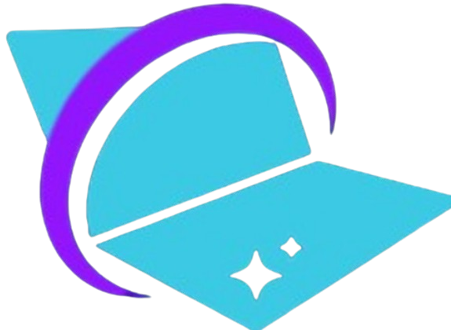
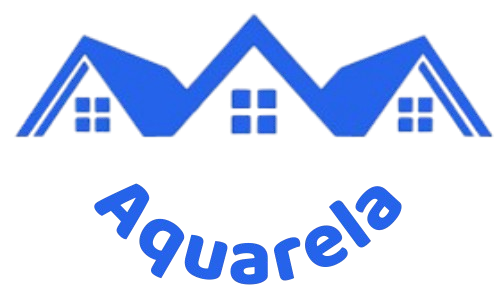

Estudante de Ciência da Computação no 8º semestre (CEUB), com sólida bagagem em infraestrutura adquirida na CAESB. Atualmente, transformo desafios em software na ECODOTS, aprimorando minhas habilidades e construindo soluções inovadoras. Apaixonado por tecnologia, utilizo Linux para ambientes de desenvolvimento e Python e Flask para construir sistemas de alta performance e arquitetura otimizada.
Soluções digitais com eficiência e código limpo.
Cientista da Computação focado em desenvolvimento web com aplicações fullstack.
Sobre Mim
Projetos em Destaque

KitPc
Guia para iniciantes a como montar um computador pela primeira vez sem medo e sem erros
Ver o Site
Condoquarela
Esse projeto não é meu mas colaborei estrategicamente na concepção e implementação da interface (UI/UX), garantindo uma navegação intuitiva.
Ver o siteEspecialidades Técnicas
Python
Flask
MySQL
Bootstrap
Linux
Diferenciais Profissionais
Liderança
Comunicação
Proatividade
Agilidade
Experiência Profissional
Desenvolvedor Web (Estágio)
DEZ/2025 - ATUALECODOTS | Remoto
- Desenvolvimento de aplicações full-stack escaláveis.
- Criação de APIs eficientes e integração com bancos de dados.
Infraestrutura de TI (Estágio)
JAN/2025 - JUL/2025CAESB | Brasília
- Suporte técnico especializado em ambientes Windows e Linux.
- Manutenção de hardware e gerenciamento de rede.
Monitor de Curso de Informática (Voluntário)
AGO/2022 - DEZ/2022CEUB | Brasília
- Ensino de informática básica para jovens e idosos.
- Produção de materiais didáticos.
- Sistema de controle de presença e progresso dos alunos.